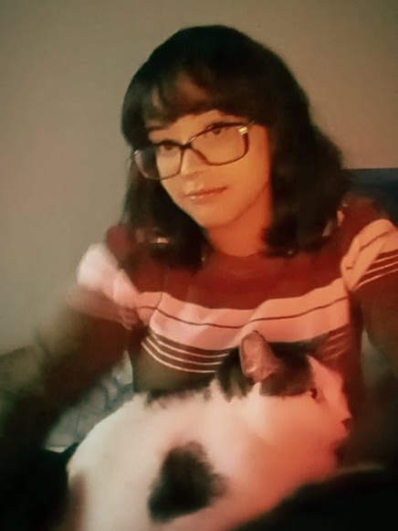
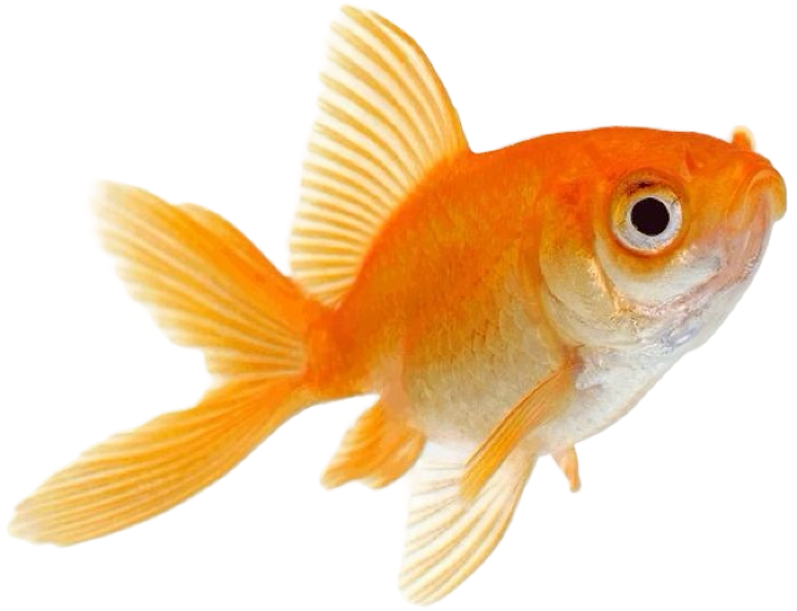
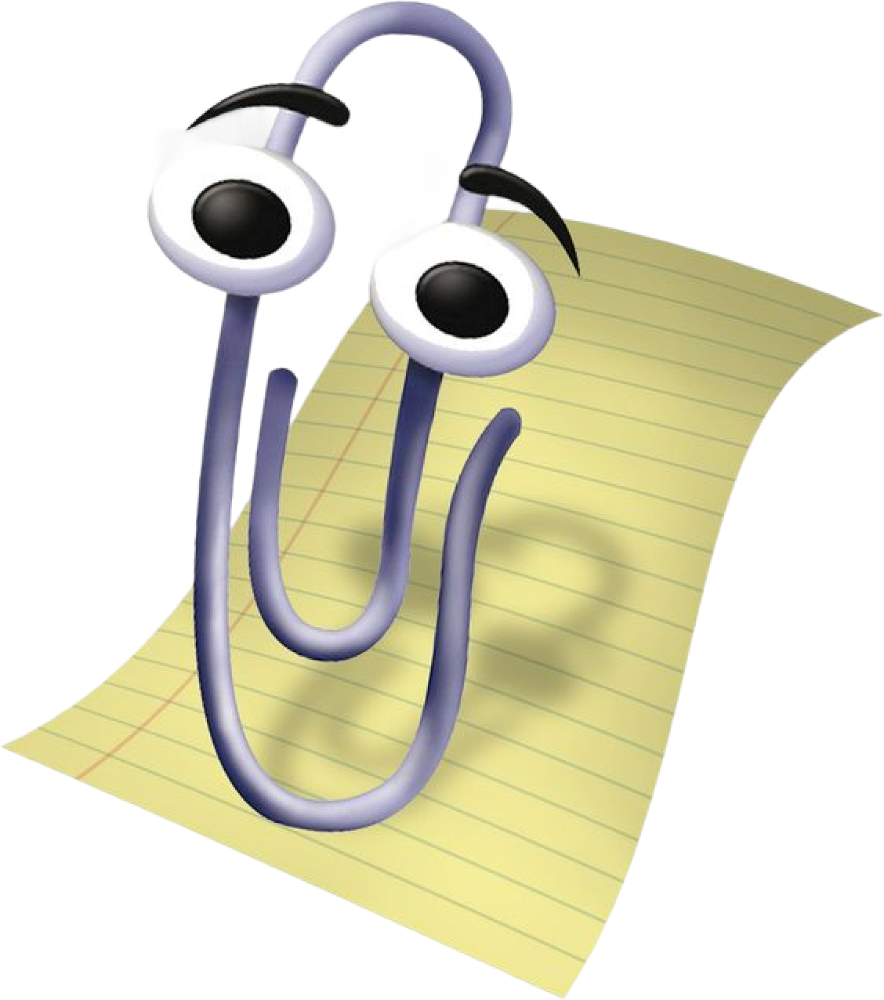
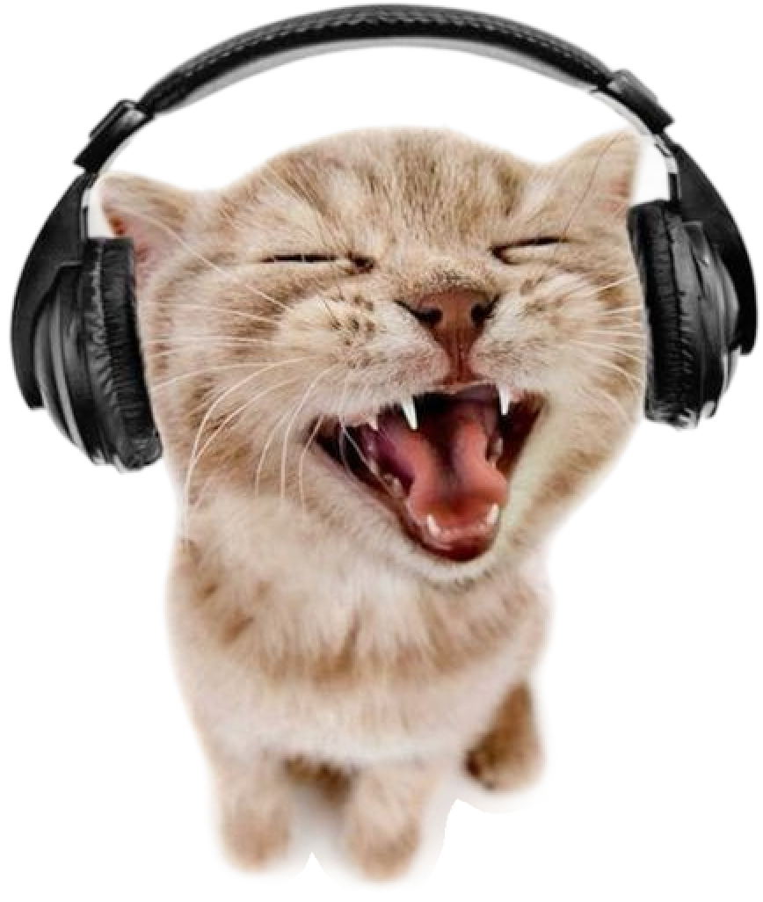

✦ Sally · Celly · Marcy · Mimiomia ✦




Sou apaixonada por tecnologia, mas principalmente pela estética da internet antiga em que cada site era um reflexo do seu criador. Onde todos fugiam dos templates e algoritmos. Tudo era feito manualmente pixel por pixel e você conseguia entender o universo do desenvolvedor.
Eu acredito fortemente que somos feitos do que consumimos, dos filmes que assistimos, dos livros que lemos, das músicas que ouvimos, das pessoas que admiramos. Cada coisa que passa por nossa vida deixa uma marca, e é essa coleção de marcas que forma quem somos.
Este espaço é meu Wunderkammer digital. Que vai além de listar o que gosto e carrega também o que penso sobre essas coisas.
:·. Gabinete das maravilhas .·:
:·. Como o projeto nasceu .·:
O Wunderkammer nasceu como um projeto individual da faculdade de Ciências da computação e o objetivo era aplicar todo conteúdo do primeiro semestre, e o tema devia ser sobre algo que nos importasse de verdade. Eu escolhi curadoria.
Por muito tempo, eu pensei ser impossível ser uma pessoa única. E que pra ser assim eu precisava ser 100% autêntica, sem parecer com ninguém. Hoje, sei que isso é mentira. Somos inteiramente feitos de referências. Nossa personalidade é uma colagem de tudo que absorvemos ao longo da vida. O que nos torna únicos não é originalidade pura, mas o olhar específico que cada um aplica sobre essas referências. Sendo essa curadoria, a chave pra nos encontrarmos de verdade.
A escolha do formato de OS não foi aleatória. A internet antiga era um lugar onde cada pessoa podia construir uma presença digital completamente personalizada.
✦ Deixe uma mensagem no site ✦
Carregando mensagens...